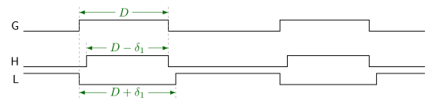

4.4. 磁场定向控制（FOC）¶
FOC 由速度控制器、电流控制器以及换相和估计子组件组成。 FOC 组件的高层框图如 图 4.2。

图 4.2 MCAF 磁场定向控制框图¶
此框图显示了多个在 测试框架。
4.4.1. 速度控制¶
速度控制环路是一个简单的标量 PI 控制器，具有管理的饱和特性，以防止在速度或电流控制器饱和时出现积分器饱和。
其前级有一个速率限制器，以提供更平滑的轨迹整形并减少瞬态过冲。
饱和和反饱和特性已包含并在 单独的文档。
4.4.1.1. 电压控制¶
电压控制 是 MCAF R7 中提供的替代控制结构。在电压控制中，反电动势被用作速度控制的代理，由于定子电阻的存在而具有一定的柔量。当此功能激活时，电流控制环路和活动的位置/速度估计器正常运行。
4.4.2. 电流控制¶
电流控制环路是一个在 dq 参考坐标系中运行的矢量控制环路，通过参考变换与 ABC 静止参考坐标系（电流测量和占空比指令的坐标系）进行转换。矢量控制环路本身是一对简单的 PI 控制器，具有管理的饱和特性，以防止在电流控制器饱和时出现积分器饱和。（饱和和反饱和特性在 单独的文档中有更详细的介绍。）
图 4.2 显示了一个位于电流控制器之前的滤波器模块。其目的是减缓来自速度环路的输入命令，速度环路通常以较慢的速率执行。
图 4.2 还显示了逆 Park 变换之后的直流母线电压补偿。
4.4.3. 位置和速度估计器¶
MCAF 提供了多种 位置和速度估计器 用于换相和速度控制：
4.4.4. 实现说明¶
4.4.4.1. FOC 功能支持¶
4.4.4.1.1. 弱磁控制¶
在 MCAF R1 – R5 中，未提供弱磁控制，速度控制器将 d 轴电流指令设为零。
从 MCAF R6 开始，弱磁控制已作为 磁通控制 模块的一部分提供。
4.4.4.1.2. 电流指令预滤波器¶
电流控制器之前的滤波器在 MCAF R1 – R9 中未实现，但保留供未来版本使用。
4.4.4.1.3. 直流母线电压补偿¶
直流母线电压补偿 在 MCAF R1 中未实现，但从 MCAF R2 开始已实现。在 MCAF R1 中， \(V_{dq}\) 和 \(D_{dq}\) 之间的乘法不存在。
4.4.4.1.4. PWM 占空比实现¶
MCAF R1 使用了 Microchip 电机控制库（MC_CalculateSpaceVectorPhaseShifted_Assembly）中的传统空间矢量 PWM（CSVPWM）实现。从 MCAF R2 开始，已切换为使用零序调制模块，该模块包含在可实现范围内的削波（最小和最大占空比限制），以支持 过调制。参见 MCAF_FocStepIsrForwardPath()。
有关 ZSM 的更多信息，请参见 Microchip 的 零序调制教程。
4.4.4.1.5. 速度环路电流限制¶
速度环路控制器对其输出（q 轴电流参考值）设有上限和下限。
MCAF R1 – R5 使用固定的上限和下限，等于 \(\plusmn I_{\max}\)，即额定连续驱动电流或额定连续电机电流中的较小值。
从 MCAF R6 开始，速度控制器使用由 磁通控制模块计算的限值，该限值以 \(\plusmn I_{\max}\)为界。根据所使用的电流限制区域类型，此限值可能是固定的或动态变化的。更多详情请参见 q 轴电流限值的计算。
4.4.4.1.6. 饱和和反饱和¶
当某些速度反饱和条件发生时，速度环路误差积分被抑制。
在 MCAF R1 – R5 中，速度反饱和条件包括电流和电压饱和的检测。
从 MCAF R6 开始，当启用 flux weakening 时，电压饱和不用于速度反饱和，以允许进入弱磁区域。当弱磁控制禁用时，电压饱和用于速度反饱和。
4.4.4.1.7. 磁通控制¶
磁通控制，包括 flux weakening 和 MTPA，作为选项在 MCAF R6 中添加。
4.4.4.1.8. 电流测量/增益和偏移补偿¶
电流偏移误差的运行时补偿
电流增益误差的编译时补偿，用于 MCLV-2
使用单/双/三通道测量
4.4.4.1.9. 死区补偿¶
死区补偿 作为选项在 MCAF R6 中添加。
4.4.4.2. PWM 占空比和死区的数值¶
了解 MCAF 中存在死区时 PWM 占空比的一些细微之处很重要。特定数值占空比（例如 d = 0.1）的解释可能略有难度。本节记录了它们的使用方式，以及如何在已知功率电子器件限制的情况下确定正确的值。 图 4.3 显示了与 PWM 占空比和死区相关的几个重要点。

图 4.3 正确解释占空比¶
用于半桥电路的典型 PWM 外设产生三个波形：
原始生成的脉冲波形 G，占空比为 \(D\)
高侧输出 H，前沿延迟死区时间 \(\delta_1\)，
低侧输出 L，反相且后沿延迟死区时间 \(\delta_1\)。
其他实现可能会对称地将死区时间分成两半。（参见 dsPIC33 PWM 说明）
整个半桥的预期占空比为 \(D\)。
高侧栅极驱动的占空比为 \(D-\delta_1\)。（其中 \(\delta_1\) 表示为总 PWM 周期的分数）
低侧栅极驱动的占空比为 \(1-D-\delta_1\)。
对于感性负载，且晶体管的导通时间和关断时间大致相等时，整个半桥的有效占空比为
\(D-\delta_1\) 如果电流流出半桥（死区期间低侧二极管导通），
\(D+\delta_1\) 如果电流流入半桥（死区期间高侧二极管导通），
或者介于两者之间（如果电流在整个死区期间不保持正或负）——这表示不连续导通。
半桥的电路设计者应记录以下量：
最小占空比 \(D_{HMIN}\) 和最大占空比 \(D_{HMAX}\) 高侧晶体管的
最小占空比 \(D_{LMIN}\) 和最大占空比 \(D_{LMAX}\) 低侧晶体管的
所需死区时间 \(\delta_1\)
应输入 motorBench® 开发套件的相关参数为：
桥臂的最小占空比 \(D_{BMIN}=\max(D_{HMIN},1-D_{LMAX}-2\delta_1)\)
桥臂的最大占空比 \(D_{BMAX}=\min(1-D_{HMIN},D_{HMAX}+2\delta_1)\)
这将产生 表 4.1。
波形 |
最小占空比 |
最大占空比 |
|---|---|---|
G |
\(D_{BMIN} + \delta_1\) |
\(D_{BMAX} - \delta_1\) |
H |
\(D_{BMIN}\) |
\(D_{BMAX} - 2\delta_1\) |
L |
\(1-D_{BMAX}\) |
\(1-D_{BMIN} - 2\delta_1\) |
通常两个最小占空比 \(D_{LMIN}\) 和 \(D_{HMIN}\) 决定占空比限制，而不是最大占空比。
为了帮助说明其工作原理，下面给出一些具体示例。
4.4.4.2.1. dsPIC33 器件中的 PWM 外设¶
dsPIC33EP 器件中的 PWM 外设将死区时间分成两半，计算低侧和高侧输出的边沿，使其在时间上以无死区时的“理想”开关时刻为中心。 图 4.3 中的波形 G、H 和 L 的宽度相同，但波形 H 和 L 在时间上提前了 \(\delta_1/2\)。
4.4.4.2.2. 示例 1¶
高侧晶体管必须限制在 \(D_{HMIN}=1.2\%\) 占空比和 \(D_{HMAX} = 99\%\) 占空比之间
低侧晶体管必须限制在 \(D_{LMIN}=3.0\%\) 占空比和 \(D_{LMAX} = 99.5\%\) 占空比之间
2% 死区时间
这是自举栅极驱动的实际情况，其中 \(D_{LMIN}\) 较大，以确保自举电容有足够的充电时间。
我们计算
由此产生的波形值如 表 4.2。
波形 |
最小占空比 |
最大占空比 |
|---|---|---|
G |
0.032 |
0.95 |
H |
0.012 |
0.93 |
L |
0.03 |
0.948 |
注意，在这种情况下，限制由最小占空比决定；H 和 L 波形的最大占空比远低于其所需的最大值。
4.4.4.2.3. 示例 2¶
高侧晶体管必须限制在 \(D_{HMIN} = 1.2\%\) 占空比和 \(D_{HMAX} = 90\%\) 占空比之间
低侧晶体管必须限制在 \(D_{LMIN} = 3.0\%\) 占空比和 \(D_{LMAX} = 80\%\) 占空比之间
2% 死区时间
我们计算
由此产生的波形值如 表 4.3。
波形 |
最小占空比 |
最大占空比 |
|---|---|---|
G |
0.18 |
0.92 |
H |
0.16 |
0.90 |
L |
0.06 |
0.80 |
在这种情况下，限制由最大占空比决定；H 和 L 波形的最小占空比远高于其所需的最小值。
4.4.4.2.4. motorBench 推荐值® 开发套件和 MCLV-2¶
高侧晶体管必须限制在 \(D_{HMIN} = 0.5\%\) 占空比和 \(D_{HMAX} = 99.5\%\) 占空比之间
低侧晶体管必须限制在 \(D_{LMIN} = 2.23\%\) 占空比和 \(D_{LMAX} = 99.5\%\) 占空比之间
4% 死区时间
我们计算
由此产生的波形值如 表 4.4。
波形 |
最小占空比 |
最大占空比 |
|---|---|---|
G |
0.045 |
0.9377 |
H |
0.005 |
0.8977 |
L |
0.0223 |
0.915 |
注意，在这种情况下，限制由最小占空比决定；H 和 L 波形的最大占空比远低于其所需的最大值。
4.4.4.2.5. 受影响的源代码文件¶
从 MCAF R3 开始，生成的文件 parameters/hal_params.h 包含 #define 符号，用于确定最小和最大占空比。还有一个如下所示的注释：
/*
* 最小和最大占空比，
* 从 PWM 占空比寄存器的角度。
*
* PWM 生成器实际产生的最小和最大占空比
* 将加上和减去死区时间（=0.04）。
*
* 注意：这假设死区时间相同，
* 且栅极驱动通道之间的传播延迟没有显著差异。
*
* PWM 输出上看到的占空比有效限制：
* PWMxH 上的最小占空比：0.005
* PWMxL 上的最小占空比：0.0223
* PWMxH 上的最大占空比：0.8977
* PWMxL 上的最大占空比：0.915
*/
/* 半桥的最小占空比影响
* 上桥臂晶体管的最小占空比
* 和下桥臂晶体管的最大占空比。
*/
/* 最小占空比寄存器值（计数） */
#define HAL_PARAM_MIN_DUTY_COUNTS 157 // Q0(157.00000) = +44.85714 m = +45.00000 m - 0.3175%
/* 最小占空比寄存器值（比值） */
#define HAL_PARAM_MIN_DUTY_Q15 1475 // Q15( 0.04501) = +45.01343 m = +45.00000 m + 0.0298%
/* 最大低侧占空比寄存器值（计数） */
#define HAL_PARAM_MAX_LOWER_DUTY_COUNTS 3342 // Q0(3342.00000) = +954.85714 m = +955.00000 m - 0.0150%
/* 半桥的最大占空比影响
* 上桥臂晶体管的最大占空比
* 和下桥臂晶体管的最小占空比。
*/
/* 最大占空比寄存器值（计数） */
#define HAL_PARAM_MAX_DUTY_COUNTS 3282 // Q0(3282.00000) = +937.71429 m = +937.70000 m + 0.0015%
/* 最大占空比寄存器值（比值） */
#define HAL_PARAM_MAX_DUTY_Q15 30727 // Q15( 0.93771) = +937.71362 m = +937.70000 m + 0.0015%
/* 最小低侧占空比寄存器值（计数） */
#define HAL_PARAM_MIN_LOWER_DUTY_COUNTS 218 // Q0(218.00000) = +62.28571 m = +62.30000 m - 0.0229%
4.4.4.2.6. MCAF 对全导通/关断时间的支持¶
MCAF 不支持高侧或低侧晶体管的全导通或全关断时间。这是一个难以实现的功能，因为它代表占空比的一个小的跳变不连续性。
4.4.4.3. 模块¶
4.4.4.3.1. 核心 FOC¶
模块 |
文件 |
描述 |
说明 |
|---|---|---|---|
deadtimecomp |
deadtimecomp.cdeadtimecomp.hdeadtimecomp_types.hparameters/deadtimecomp_params.h |
||
dyn_current |
dyn_current.cdyn_current.hdyn_current_types.hparameters/dyn_current_params.h |
||
foc |
foc.cfoc.hfoc_types.hparameters/foc_params.h |
顶层 FOC |
|
sat_PI |
parameters/sat_PI_params.hsat_PI.csat_PI.hsat_PI_types.h |
PI 环路饱和管理 |
|
parameters/init_params |
parameters/init_params.cparameters/init_params.h |
FOC 控制参数的初始化 |
|
parameters/outerloop_params |
parameters/outerloop_params.h |
用于指定外环类型（速度或 电压控制） |
4.4.4.3.2. 换相¶
模块 |
文件 |
描述 |
说明 |
|---|---|---|---|
commutation |
commutation.ccommutation.hcommutation_types.h |
顶层换相/估计 |
|
commutation_excitation |
commutation_excitation.h |
处理 侵入式估计器 |
的输出激励。包含计算所需激励电压的函数——如果仅使用 非侵入式估计器 则为零。 |
commutation/atpll |
commutation/atpll.ccommutation/atpll.hparameters/atpll_params.h |
||
commutation/common |
commutation/common.h |
所有估计器中使用的通用功能 |
|
commutation/pll |
commutation/pll.ccommutation/pll.hparameters/pll_params.h |
||
commutation/qei |
commutation/qei.ccommutation/qei.hcommutation/qei_types.h |
正交编码器可用作换相和速度反馈的主要估计器，或用于获取参考位置和速度以测试估计器性能。 |
|
commutation/qei_sync |
commutation/qei_sync.ccommutation/qei_sync.hcommutation/qei_sync_types.h |
||
commutation/zsmt |
commutation/zsmt.ccommutation/zsmt.hcommutation/zsmt_hybrid.ccommutation/zsmt_hybrid.hcommutation/zsmt_hybrid_interaction.hcommutation/zsmt_types.hcommutation/zsmtlib.hparameters/zsmt_hybrid_params.hparameters/zsmt_params.h |